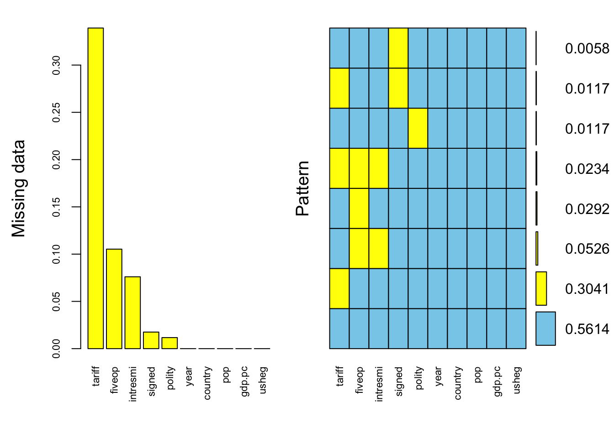
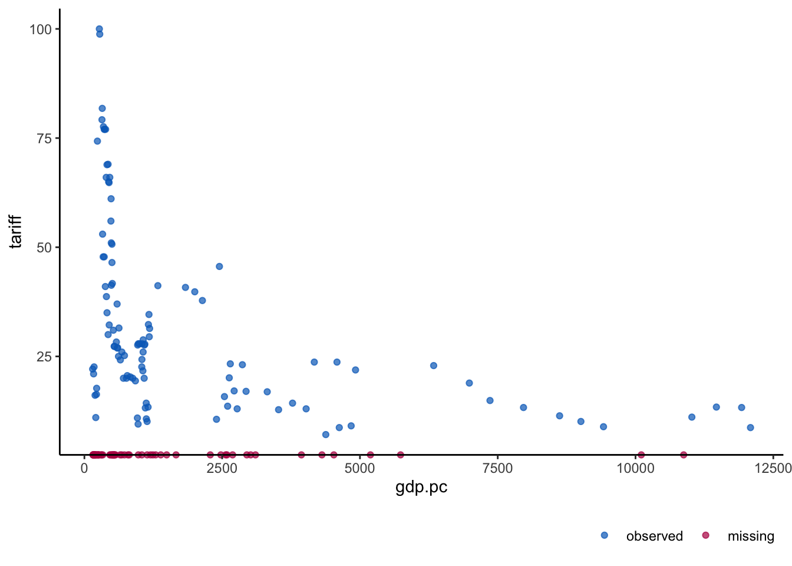
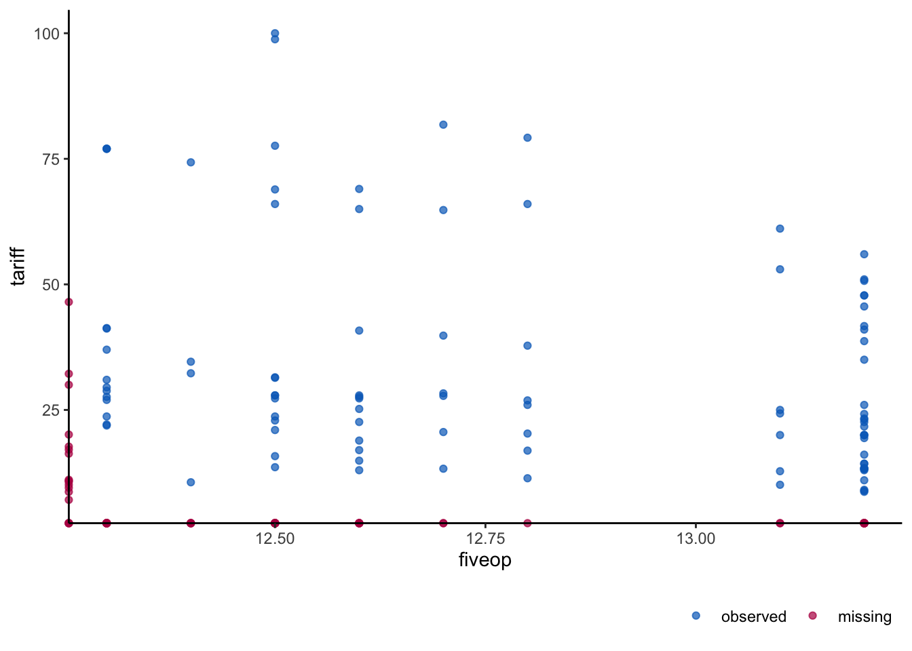
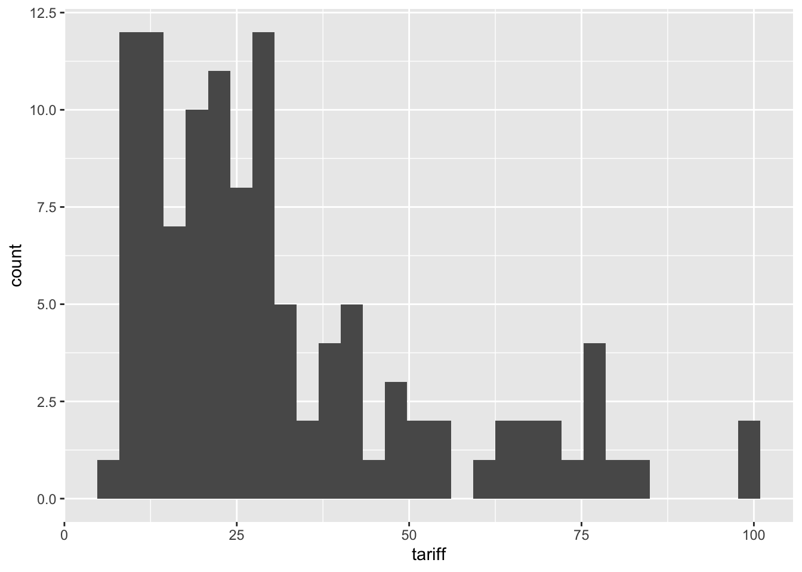
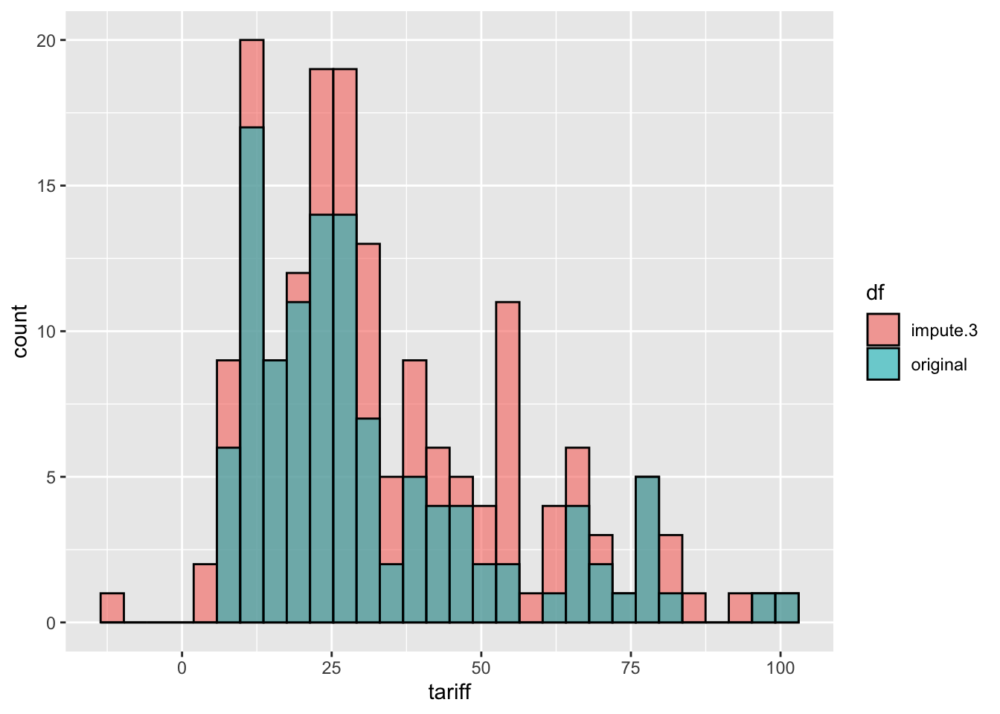

## library(Amelia) # Already loaded above, here just to remind
data("freetrade") # Modified dataset, included in the packageSession 1 - Missing Data
Reading
Today’s Lab
Using example from AmeliaII
Paper:
Milner, Helen V., and Keiko Kubota. 2005. “Why the Move to Free Trade? Democracy and Trade Policy in the Developing Countries.” International Organization 59 (1): 107–43. https://www.jstor.org/stable/3877880.
Abstract:
Rising international trade flows are a primary component of globalization. The liberalization of trade policy in many developing countries has helped foster the growth of these flows. Preceding and concurrent with this move to free trade, there has been a global movement toward democracy. We argue that these two trends are related: democratization of the political system reduces the ability of governments to use trade barriers as a strategy for building political support. Political leaders in labor-rich countries may prefer lower trade barriers as democracy increases. Empirical evidence supports our claim about the developing countries from 1970-99. Regime change toward democracy is associated with trade liberalization, controlling for many factors. Conventional explanations of economic reform, such as economic crises and external pressures, seem less salient. Democratization may have fostered globalization in this period.
Estimation
The following code is not needed for exercise today. I have written the Latex equation to given an example of how to write multi line equations in paper. Also note, there are dependencies on some Latex packages which some of which I add between lines 28-38 in the code above.
\[\begin{aligned} tradepolicy_{i,t} = \beta_0 & + \beta_1 REGIME_{i,t-1} + \beta_3 IMF_{i,t-1} \\ & + \beta_4OFFICE_{i,t-1} + \beta_5GDPPC_{i,t-1} \\ & + \beta_6LNPOP_{i,t-1} + \beta_7ECCRISIS_{i,t-1} \\ & + \beta_8BPCRISIS_{i,t-1} + \beta_9AVOPEN_{i,t-1} \\ & + u_i + \epsilon_{i,t} \end{aligned}\]
In the example from Amelia page, a modified dataset is used
| Variable | Description |
|---|---|
year |
year |
country |
country |
tariff |
average tariff rates |
polity |
Polity IV Score[^polity] |
pop |
total population |
gdp.pc |
gross domestic product per capita |
intresmi |
gross international reserves |
signed |
dummy variable if signed an IMF agreement that year |
fivop |
measure of financial openness |
usheg |
measure of US hegemony[^hegemony] |
Exploring data
# Seeing aummary of all the variables
summary(freetrade) year country tariff polity
Min. :1981 Length:171 Min. : 7.10 Min. :-8.000
1st Qu.:1985 Class :character 1st Qu.: 16.30 1st Qu.:-2.000
Median :1990 Mode :character Median : 25.20 Median : 5.000
Mean :1990 Mean : 31.65 Mean : 2.905
3rd Qu.:1995 3rd Qu.: 40.80 3rd Qu.: 8.000
Max. :1999 Max. :100.00 Max. : 9.000
NA's :58 NA's :2
pop gdp.pc intresmi signed
Min. : 14105080 Min. : 149.5 Min. :0.9036 Min. :0.0000
1st Qu.: 19676715 1st Qu.: 420.1 1st Qu.:2.2231 1st Qu.:0.0000
Median : 52799040 Median : 814.3 Median :3.1815 Median :0.0000
Mean :149904501 Mean : 1867.3 Mean :3.3752 Mean :0.1548
3rd Qu.:120888400 3rd Qu.: 2462.9 3rd Qu.:4.4063 3rd Qu.:0.0000
Max. :997515200 Max. :12086.2 Max. :7.9346 Max. :1.0000
NA's :13 NA's :3
fiveop usheg
Min. :12.30 Min. :0.2558
1st Qu.:12.50 1st Qu.:0.2623
Median :12.60 Median :0.2756
Mean :12.74 Mean :0.2764
3rd Qu.:13.20 3rd Qu.:0.2887
Max. :13.20 Max. :0.3083
NA's :18 Exploring missingness?
## function to create table of missingness by variable
mdesc <- function(df) {
if (is.vector(df)) {
missing_col <- sum(is.na(df))
total_col <- length(df)
perc_missing_col <- missing_col / total_col
out <- data.frame(
'missing' = missing_col,
'total' = total_col,
'percent_missing' = perc_missing_col
)
return(out)
} else if (is.data.frame(df)) {
var_col <- colnames(df)
missing_col <- unlist(lapply(df, function(x) sum(is.na(x))))
total_col <- nrow(df)
perc_missing_col <- missing_col / total_col
out <- data.frame(
'variable' = var_col,
'missing' = missing_col,
'total' = total_col,
'percent_missing' = perc_missing_col
)
rownames(out) <- NULL
return(out)
} else {
stop('Please enter a vector or data.frame!')
}
}
# Missingness on DV
mdesc(freetrade$tariff) missing total percent_missing
1 58 171 0.3391813# Missingness in whole dataset
mdesc(freetrade) variable missing total percent_missing
1 year 0 171 0.00000000
2 country 0 171 0.00000000
3 tariff 58 171 0.33918129
4 polity 2 171 0.01169591
5 pop 0 171 0.00000000
6 gdp.pc 0 171 0.00000000
7 intresmi 13 171 0.07602339
8 signed 3 171 0.01754386
9 fiveop 18 171 0.10526316
10 usheg 0 171 0.00000000Better way to explore missingness
Using VIM
# install.packages("VIM")
library(VIM)Loading required package: colorspaceLoading required package: gridVIM is ready to use.Suggestions and bug-reports can be submitted at: https://github.com/statistikat/VIM/issues
Attaching package: 'VIM'The following object is masked from 'package:datasets':
sleepmice_plot <- aggr(freetrade, col=c('skyblue','yellow'),
numbers=TRUE, sortVars=TRUE,
labels=names(freetrade), cex.axis=.7,
gap=3, ylab=c("Missing data","Pattern"))
Variables sorted by number of missings:
Variable Count
tariff 0.33918129
fiveop 0.10526316
intresmi 0.07602339
signed 0.01754386
polity 0.01169591
year 0.00000000
country 0.00000000
pop 0.00000000
gdp.pc 0.00000000
usheg 0.00000000How to read the output
Using ggmice
## library(ggmice)
sum(is.na(freetrade$gdp.pc))[1] 0ggmice(freetrade, aes(gdp.pc,tariff )) + geom_point()
This can be useful in seeing patterns in missingness in the data.
The plot above shoes red marks on the x-axis for those values of gdp.pc for which the tariff value on y-axis is missing.
In this case, gdp.pc has no missing values. What if both axes have variables that have missing value. Look at the graph plot created by VIM to see any such variable.
Let’s use tariff with variable fiveop.
sum(is.na(freetrade$fiveop))[1] 18ggmice(freetrade, aes(fiveop,tariff )) + geom_point()
More functionalities in the ggmice package
Dealing with Missing data: Mutiple Imputations
Most packages perform listwise/case-wise deletion.
summary(model.lm <- lm(tariff ~ polity + pop + gdp.pc + year + country,
data = freetrade))
Call:
lm(formula = tariff ~ polity + pop + gdp.pc + year + country,
data = freetrade)
Residuals:
Min 1Q Median 3Q Max
-30.7640 -3.2595 0.0868 2.5983 18.3097
Coefficients:
Estimate Std. Error t value Pr(>|t|)
(Intercept) 1.973e+03 4.016e+02 4.912 3.61e-06 ***
polity -1.373e-01 1.821e-01 -0.754 0.453
pop -2.021e-07 2.542e-08 -7.951 3.23e-12 ***
gdp.pc 6.096e-04 7.442e-04 0.819 0.415
year -8.705e-01 2.084e-01 -4.176 6.43e-05 ***
countryIndonesia -1.823e+02 1.857e+01 -9.819 2.98e-16 ***
countryKorea -2.204e+02 2.078e+01 -10.608 < 2e-16 ***
countryMalaysia -2.245e+02 2.171e+01 -10.343 < 2e-16 ***
countryNepal -2.163e+02 2.247e+01 -9.629 7.74e-16 ***
countryPakistan -1.554e+02 1.982e+01 -7.838 5.63e-12 ***
countryPhilippines -2.040e+02 2.088e+01 -9.774 3.75e-16 ***
countrySriLanka -2.091e+02 2.210e+01 -9.460 1.80e-15 ***
countryThailand -1.961e+02 2.095e+01 -9.358 2.99e-15 ***
---
Signif. codes: 0 '***' 0.001 '**' 0.01 '*' 0.05 '.' 0.1 ' ' 1
Residual standard error: 6.221 on 98 degrees of freedom
(60 observations deleted due to missingness)
Multiple R-squared: 0.9247, Adjusted R-squared: 0.9155
F-statistic: 100.3 on 12 and 98 DF, p-value: < 2.2e-16library(estimatr)
summary(model.lm.r <- lm_robust(tariff ~ polity + pop + gdp.pc,
data = freetrade,
fixed_effects = year,
clusters = country))
Call:
lm_robust(formula = tariff ~ polity + pop + gdp.pc, data = freetrade,
clusters = country, fixed_effects = year)
Standard error type: CR2
Coefficients:
Estimate Std. Error t value Pr(>|t|) CI Lower CI Upper DF
polity 9.933e-01 5.954e-01 1.668 0.1963 -9.303e-01 2.917e+00 2.923
pop 3.075e-08 1.850e-08 1.662 0.2449 -5.304e-08 1.145e-07 1.899
gdp.pc -2.168e-03 1.560e-03 -1.390 0.3072 -9.369e-03 5.032e-03 1.865
Multiple R-squared: 0.5238 , Adjusted R-squared: 0.4114
Multiple R-squared (proj. model): 0.415 , Adjusted R-squared (proj. model): 0.277
F-statistic (proj. model): 4.069 on 3 and 8 DF, p-value: 0.04992# Let's see how many observations final models have
nrow(model.lm$model)[1] 111(model.lm.r$nobs)[1] 111Step 1 : Reduce data?
## How many variables? Do we need to go through reduction?
dim(freetrade)[1] 171 10Step 2: Which model?
Sample of model setup in amelia function
Imputations: 5
Time-series: Year
Cross-section: Country
polynomial: third-order time polynomial (example)
lags: DV and IVs of interest
prior: ridge prior (1%)
Step 3: Imputation
How many imputations to conduct? (lall2017?)
## What is average percentage of missing data?
#m is equal to the average missing-data rate of all variables in the imputation model
NAs <- function(x) {
as.vector(apply(x, 2, function(x) length(which(is.na(x)))))
}
NAs(freetrade) [1] 0 0 58 2 0 0 13 3 18 0mean(NAs(freetrade)/nrow(freetrade))*100[1] 5.497076From Amelia Webpage
When performing multiple imputation, the first step is to identify the variables to include in the imputation model. It is crucial to include at least as much information as will be used in the analysis model. That is, any variable that will be in the analysis model should also be in the imputation model. This includes any transformations or interactions of variables that will appear in the analysis model.
In fact, it is often useful to add more information to the imputation model than will be present when the analysis is run. Since imputation is predictive, any variables that would increase predictive power should be included in the model, even if including them in the analysis model would produce bias in estimating a causal effect (such as for post-treatment variables) or collinearity would preclude determining which variable had a relationship with the dependent variable (such as including multiple alternate measures of GDP). In our case, we include all the variables in freetrade in the imputation model, even though our analysis model focuses on polity, pop and gdp.pc. We’re not incorporating time or spatial data yet, but we do below.
Compare this write-up with Lall’s (2017) suggestions and assumptions
To create multiple imputations in Amelia, we can simply run
set.seed(20230918)
a.out <- amelia(freetrade,
m = 5,
ts = "year",
cs = "country")-- Imputation 1 --
1 2 3 4 5 6 7 8 9 10 11 12
-- Imputation 2 --
1 2 3 4 5 6 7 8 9 10 11 12 13 14 15 16
-- Imputation 3 --
1 2 3 4 5 6 7 8 9 10 11 12 13 14 15 16
-- Imputation 4 --
1 2 3 4 5 6 7 8 9 10 11 12 13 14 15
-- Imputation 5 --
1 2 3 4 5 6 7 8 9 10a.out
Amelia output with 5 imputed datasets.
Return code: 1
Message: Normal EM convergence.
Chain Lengths:
--------------
Imputation 1: 12
Imputation 2: 16
Imputation 3: 16
Imputation 4: 15
Imputation 5: 10# See the number of rows
nrow(a.out$imputations$imp1)[1] 171nrow(a.out$imputations$imp2)[1] 171The output gives some information about how the algorithm ran. Each of the imputed datasets is now in the list a.out$imputations. Thus, we could plot a histogram of the tariff variable from the 3rd imputation,
ggplot(a.out$imputations[[3]], aes(tariff)) +geom_histogram()`stat_bin()` using `bins = 30`. Pick better value with `binwidth`.
ggplot(freetrade, aes(tariff)) +geom_histogram()`stat_bin()` using `bins = 30`. Pick better value with `binwidth`.Warning: Removed 58 rows containing non-finite outside the scale range
(`stat_bin()`).
#Compare with original data
comb.tariff <- rbind.data.frame(
cbind(tariff = a.out$imputations[[3]]$tariff, df = "impute.3"),
cbind(tariff = freetrade$tariff, df = "original")) %>%
mutate( tariff = as.numeric(tariff))
ggplot(comb.tariff, aes(tariff, fill = df)) +geom_histogram(position = 'identity', alpha = 0.6, color = "black")`stat_bin()` using `bins = 30`. Pick better value with `binwidth`.Warning: Removed 58 rows containing non-finite outside the scale range
(`stat_bin()`).
# Why are red bars higher than green barsSaving the imputed datasets
save(a.out, file = "imputations.RData")# More expansive model
# Amelia model
# as2012.out <- amelia(freetrade, # data
# m = 5, # number of imputations
# ts = "year", # time series index
# cs = "country", # cross section index
# polytime = 3, # third-order time polynomial
# lags = c("polity", "gdp.pc"), # lag variable
# ords = "polity" # Ordinal Variable
# noms = "polity" # If polity was a nominal variable
# empri = 0.01*nrow(as)) # priors
# Not running, just for explanationAlso, read sections on transformations,bounds, time-series-cross-section data (TSCS) and id-variables from the Amelia Website
Analysis with Imputed Datasets
# Recall the Linear Models we ran above
summary(model.lm)
Call:
lm(formula = tariff ~ polity + pop + gdp.pc + year + country,
data = freetrade)
Residuals:
Min 1Q Median 3Q Max
-30.7640 -3.2595 0.0868 2.5983 18.3097
Coefficients:
Estimate Std. Error t value Pr(>|t|)
(Intercept) 1.973e+03 4.016e+02 4.912 3.61e-06 ***
polity -1.373e-01 1.821e-01 -0.754 0.453
pop -2.021e-07 2.542e-08 -7.951 3.23e-12 ***
gdp.pc 6.096e-04 7.442e-04 0.819 0.415
year -8.705e-01 2.084e-01 -4.176 6.43e-05 ***
countryIndonesia -1.823e+02 1.857e+01 -9.819 2.98e-16 ***
countryKorea -2.204e+02 2.078e+01 -10.608 < 2e-16 ***
countryMalaysia -2.245e+02 2.171e+01 -10.343 < 2e-16 ***
countryNepal -2.163e+02 2.247e+01 -9.629 7.74e-16 ***
countryPakistan -1.554e+02 1.982e+01 -7.838 5.63e-12 ***
countryPhilippines -2.040e+02 2.088e+01 -9.774 3.75e-16 ***
countrySriLanka -2.091e+02 2.210e+01 -9.460 1.80e-15 ***
countryThailand -1.961e+02 2.095e+01 -9.358 2.99e-15 ***
---
Signif. codes: 0 '***' 0.001 '**' 0.01 '*' 0.05 '.' 0.1 ' ' 1
Residual standard error: 6.221 on 98 degrees of freedom
(60 observations deleted due to missingness)
Multiple R-squared: 0.9247, Adjusted R-squared: 0.9155
F-statistic: 100.3 on 12 and 98 DF, p-value: < 2.2e-16summary(model.lm.r)
Call:
lm_robust(formula = tariff ~ polity + pop + gdp.pc, data = freetrade,
clusters = country, fixed_effects = year)
Standard error type: CR2
Coefficients:
Estimate Std. Error t value Pr(>|t|) CI Lower CI Upper DF
polity 9.933e-01 5.954e-01 1.668 0.1963 -9.303e-01 2.917e+00 2.923
pop 3.075e-08 1.850e-08 1.662 0.2449 -5.304e-08 1.145e-07 1.899
gdp.pc -2.168e-03 1.560e-03 -1.390 0.3072 -9.369e-03 5.032e-03 1.865
Multiple R-squared: 0.5238 , Adjusted R-squared: 0.4114
Multiple R-squared (proj. model): 0.415 , Adjusted R-squared (proj. model): 0.277
F-statistic (proj. model): 4.069 on 3 and 8 DF, p-value: 0.04992# Now running with imputed datasets
imp.models <- with( # Note this command
a.out,
lm(tariff ~ polity + pop + gdp.pc + year + country)
)
imp.models[1:2][[1]]
Call:
lm(formula = tariff ~ polity + pop + gdp.pc + year + country)
Coefficients:
(Intercept) polity pop gdp.pc
3.402e+03 1.314e-01 -1.253e-07 5.026e-04
year countryIndonesia countryKorea countryMalaysia
-1.624e+00 -1.138e+02 -1.522e+02 -1.517e+02
countryNepal countryPakistan countryPhilippines countrySriLanka
-1.384e+02 -9.973e+01 -1.398e+02 -1.370e+02
countryThailand
-1.311e+02
[[2]]
Call:
lm(formula = tariff ~ polity + pop + gdp.pc + year + country)
Coefficients:
(Intercept) polity pop gdp.pc
3.080e+03 6.137e-02 -4.630e-08 -2.889e-04
year countryIndonesia countryKorea countryMalaysia
-1.500e+00 -5.777e+01 -7.636e+01 -7.796e+01
countryNepal countryPakistan countryPhilippines countrySriLanka
-6.808e+01 -3.119e+01 -6.796e+01 -6.195e+01
countryThailand
-6.287e+01 # Similarly, lm_robust can be run with approprite modifications
# BTW, see the class of created object
class(imp.models)[1] "amest"We can combine the imputed estimates using the rules described in (king2001?) and (analysis?) with the mi.combine() function:
out <- mi.combine(imp.models, conf.int = TRUE)
out# A tibble: 13 × 10
term estimate std.error statistic p.value df r miss.info conf.low
<chr> <dbl> <dbl> <dbl> <dbl> <dbl> <dbl> <dbl> <dbl>
1 (Inter… 2.85e+3 6.87e+2 4.15 2.86e-4 2.76e1 0.615 0.421 4.26e+3
2 polity 9.55e-2 2.98e-1 0.321 7.48e-1 1.73e4 0.0155 0.0153 6.79e-1
3 pop -8.71e-8 6.65e-8 -1.31 1.78e+0 8.78e0 2.08 0.730 6.38e-8
4 gdp.pc -9.10e-5 1.33e-3 -0.0685 1.05e+0 1.37e2 0.206 0.183 2.54e-3
5 year -1.37e+0 3.49e-1 -3.92 2.00e+0 3.25e1 0.541 0.387 -6.57e-1
6 countr… -8.78e+1 4.84e+1 -1.81 1.89e+0 8.21e0 2.31 0.752 2.35e+1
7 countr… -1.13e+2 5.84e+1 -1.94 1.91e+0 7.56e0 2.67 0.779 2.25e+1
8 countr… -1.14e+2 5.87e+1 -1.94 1.91e+0 7.84e0 2.50 0.767 2.20e+1
9 countr… -1.07e+2 5.81e+1 -1.84 1.90e+0 8.30e0 2.27 0.748 2.65e+1
10 countr… -6.56e+1 5.37e+1 -1.22 1.74e+0 7.83e0 2.51 0.768 5.86e+1
11 countr… -1.04e+2 5.70e+1 -1.83 1.89e+0 7.72e0 2.57 0.772 2.78e+1
12 countr… -9.97e+1 5.93e+1 -1.68 1.87e+0 7.91e0 2.46 0.764 3.73e+1
13 countr… -9.66e+1 5.74e+1 -1.68 1.87e+0 7.62e0 2.63 0.776 3.69e+1
# ℹ 1 more variable: conf.high <dbl># Compare with models with missing data
tidy(model.lm)# A tibble: 13 × 5
term estimate std.error statistic p.value
<chr> <dbl> <dbl> <dbl> <dbl>
1 (Intercept) 1.97e+3 4.02e+2 4.91 3.61e- 6
2 polity -1.37e-1 1.82e-1 -0.754 4.53e- 1
3 pop -2.02e-7 2.54e-8 -7.95 3.23e-12
4 gdp.pc 6.10e-4 7.44e-4 0.819 4.15e- 1
5 year -8.71e-1 2.08e-1 -4.18 6.43e- 5
6 countryIndonesia -1.82e+2 1.86e+1 -9.82 2.98e-16
7 countryKorea -2.20e+2 2.08e+1 -10.6 5.82e-18
8 countryMalaysia -2.25e+2 2.17e+1 -10.3 2.19e-17
9 countryNepal -2.16e+2 2.25e+1 -9.63 7.74e-16
10 countryPakistan -1.55e+2 1.98e+1 -7.84 5.63e-12
11 countryPhilippines -2.04e+2 2.09e+1 -9.77 3.75e-16
12 countrySriLanka -2.09e+2 2.21e+1 -9.46 1.80e-15
13 countryThailand -1.96e+2 2.10e+1 -9.36 2.99e-15tidy(model.lm.r) term estimate std.error statistic p.value conf.low
1 polity 9.932974e-01 5.954310e-01 1.668199 0.1962662 -9.302831e-01
2 pop 3.074611e-08 1.849543e-08 1.662363 0.2448695 -5.304187e-08
3 gdp.pc -2.168425e-03 1.559823e-03 -1.390174 0.3071929 -9.368722e-03
conf.high df outcome
1 2.916878e+00 2.922744 tariff
2 1.145341e-07 1.898740 tariff
3 5.031871e-03 1.864708 tariffLast Question: Any idea why AMELIA?